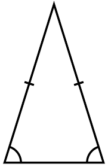

TRIÁNGULO ISÓSCELES

"Isosceles" es una composición (lingüística), a partir de los términos griegos "isos" (igual) y "skelos" (pierna).
La misma palabra se usa, por ejemplo, para el trapecio isósceles, que tiene dos lados iguales.
Los triángulos isósceles tienen dos ángulos iguales y uno diferente.
Esto hace que tengan dos lados iguales y uno diferente también. El lado que es distinto es precisamente el que está entre los ángulos iguales.